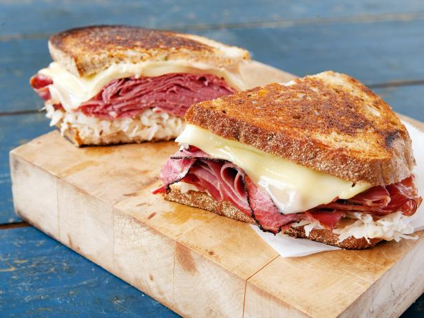

Reuben

Description
The Reuben sandwich is a North American grilled
sandwich composed of corned beef, Swiss cheese,
sauerkraut, and Thousand Island dressing or Russian
dressing, grilled between slices of rye bread. It is
associated with kosher-style delicatessens, but is
not kosher because it combines meat and cheese.
Ingredients
- rye Bread (sliced)
- Swiss Cheese
- corned Beef
- Thousand Island dressing
- sauerkraut
- softened butter
Steps
- Preheat a large griddle or skillet over medium heat.
- Spread one side of bread slices evenly with Thousand
Island dressing. On four bread slices, layer one slice
Swiss cheese, 2 slices corned beef, 1/4 cup sauerkraut,
and a second slice of Swiss cheese. Top with remaining
bread slices, dressing-side down. Butter the top of
each sandwich.
- Spread one side of bread slices evenly with Thousand
Island dressing. On four bread slices, layer one slice
Swiss cheese, 2 slices corned beef, 1/4 cup sauerkraut,
and a second slice of Swiss cheese. Top with remaining
bread slices, dressing-side down. Butter the top of each
sandwich.